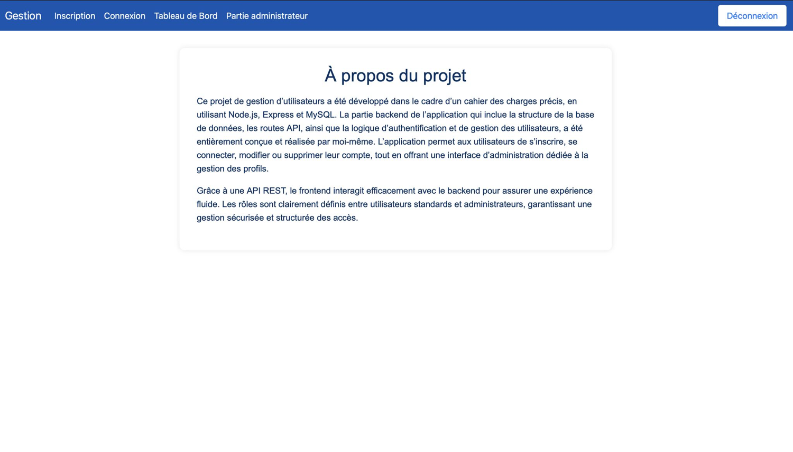
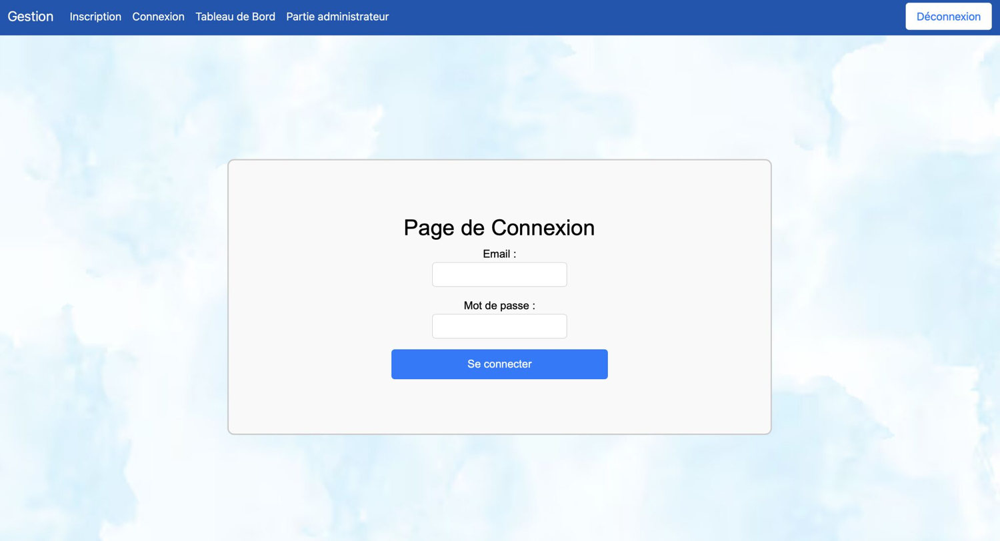
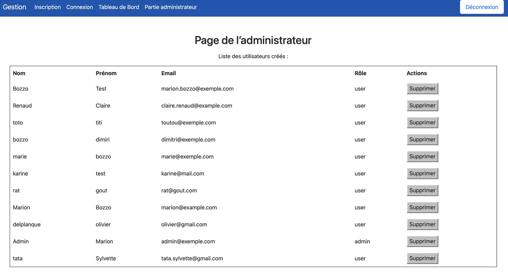

Présentation du projet
Ce projet a été développé avec Node.js, Express et MySQL. Il permet de gérer des utilisateurs, leurs rôles, leur authentification et propose une interface administrateur complète.
Objectifs principaux :
- Créer une API REST sécurisée
- Gérer les rôles (admin / utilisateur)
- Permettre l’inscription et la connexion
- Afficher et supprimer des utilisateurs
- Assurer la sécurité (hash, sessions, validations)
Techniques utilisées
- Node.js
- Express
- MySQL
- HTML
- CSS
- JavaScript
Aperçu en images




Pour en savoir davantage sur la conception et le développement de ce projet, vous pouvez consulter le dépôt GitHub :
Voir sur GitHub